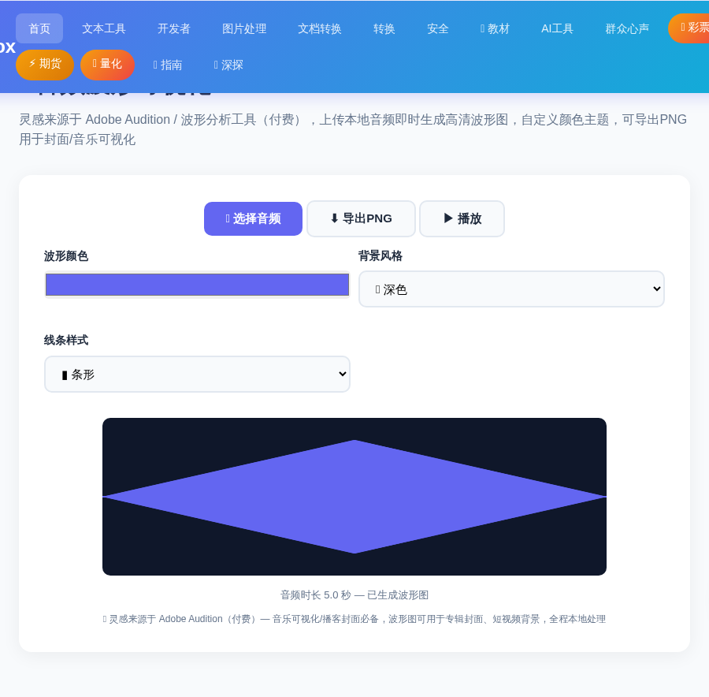
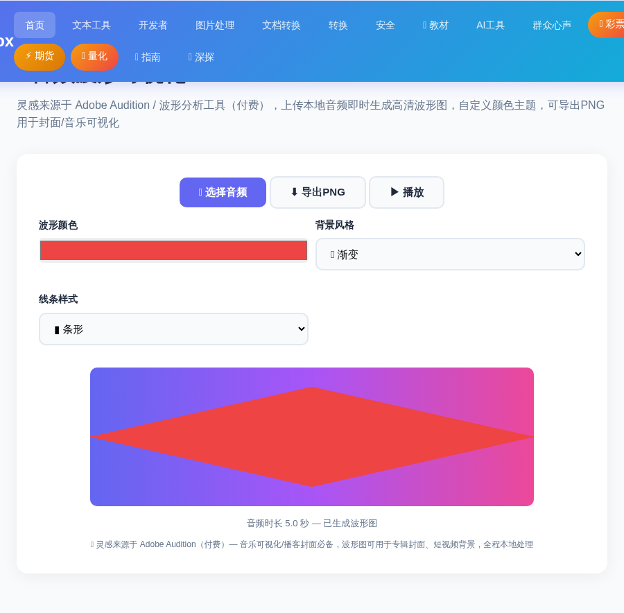
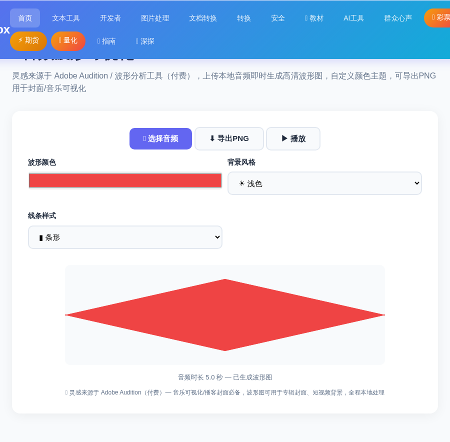

刷音乐榜单、逛播客平台时，你一定见过那种随声音起伏的波形图——音乐封面、电台背景、短视频画面里到处都是。它让"看不见的声音"变得可视化，既有科技感又特别有文艺范。
以前要生成波形图，要么用 Adobe Audition 这类收费软件，要么找在线工具但这个限速那个要注册。现在用 ToolBox 的 在线音频波形可视化工具，上传一段音频，2 分钟就能生成专属波形图：颜色随便挑、背景 4 种风格，导出 1080p 高清 PNG，封面、配图、海报都能用。全程浏览器本地处理，音频不会上传到任何服务器。
进入 ToolBox 首页，点击「🎬 媒体工具」分类，找到「📊 音频波形可视化」工具卡片进入（也可在首页搜索「波形」快速定位）。
点击「🎵 选择音频」按钮，从电脑里选一段音乐、语音或任何音频文件（支持常见音频格式）。选中后工具立刻开始解析，并在画布上渲染出实时波形。

这是最出彩的一步。工具提供两套自由调节：
比如把波形换成亮红色 + 渐变背景，立刻就有了演唱会海报的既视感：

导出前可以先点「▶️ 播放」边听边看波形跳动（视觉与声音同步）；满意之后点击「⬇️ 导出PNG」，高清波形图立即保存到你的电脑。

波形图为什么受欢迎？因为它是「声音的视觉名片」，一眼就能传达音乐的情绪与节奏。这些场景直接用得上：
Q：音频会上传到服务器吗？会不会泄露隐私？
不会。整个波形生成过程全部在你的浏览器本地完成，音频文件不会上传到任何服务器，可以放心使用。
Q：支持哪些音频格式？
浏览器支持的音频格式都可以，包括常见的 MP3、WAV、M4A、AAC、OGG 等。
Q：导出的图片清晰度够不够？
导出的是高清 PNG 图片，分辨率与画布一致（默认大尺寸），用于封面、海报、公众号配图完全够用。
📌 还没试过？上传一段音频，2 分钟生成你的专属波形图
📊 去生成波形图 →